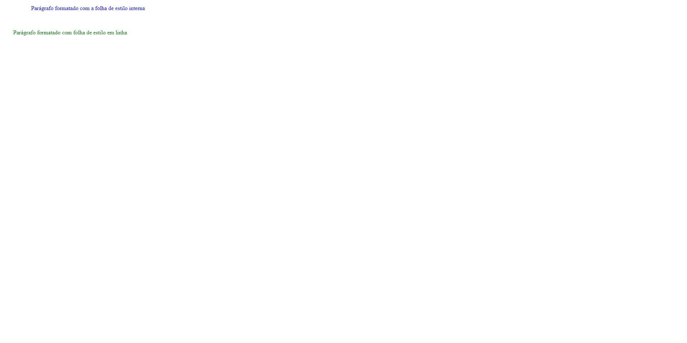
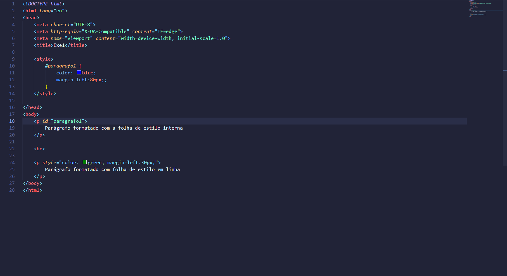
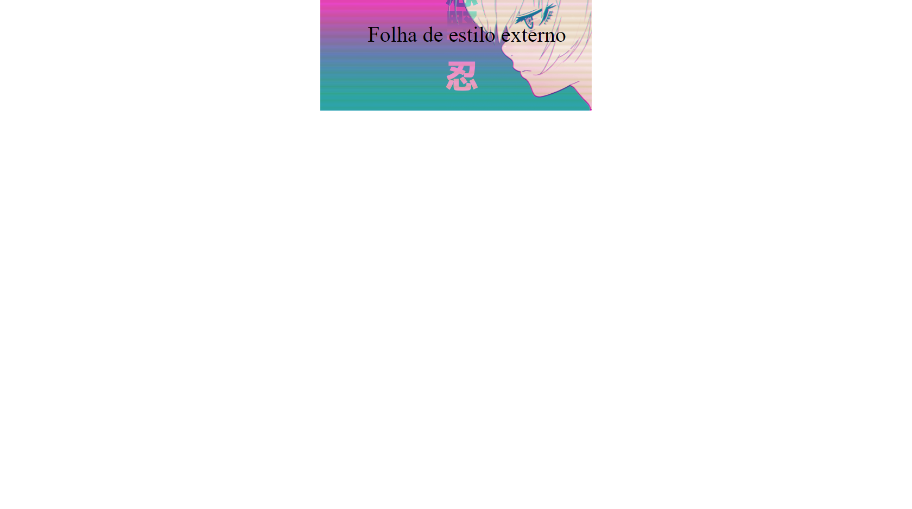
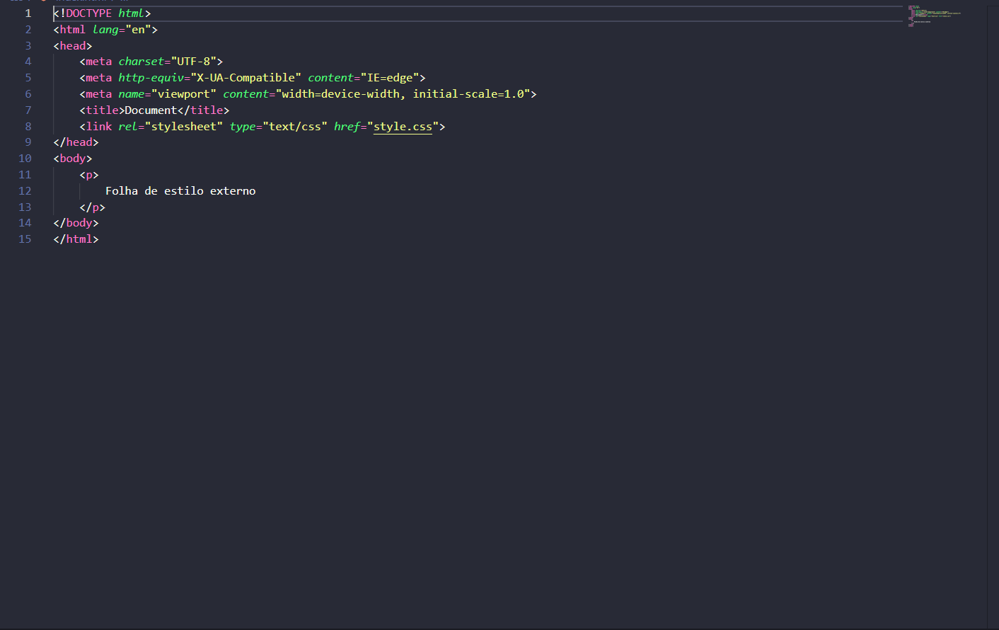
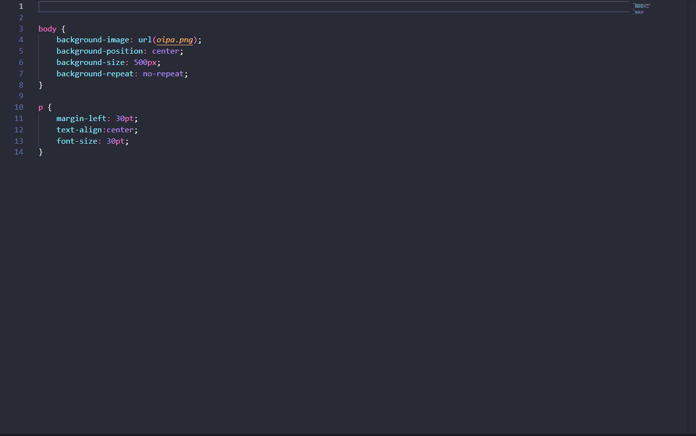

Início
Sintaxe
Tipos de CSS
Seletores
Grafismo
Sintaxe
A Sintaxe do CSS é a declaração de um seletor ou a estilização.
1º Exercício da Sintaxe usando CSS Interno
 
2º Exercício da Sintaxe usando CSS Externo
  